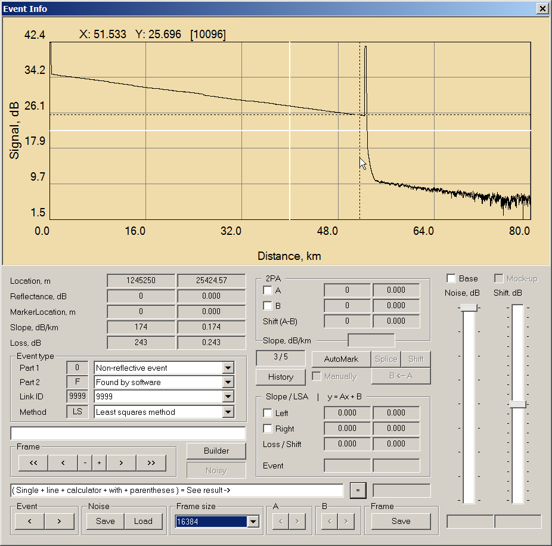
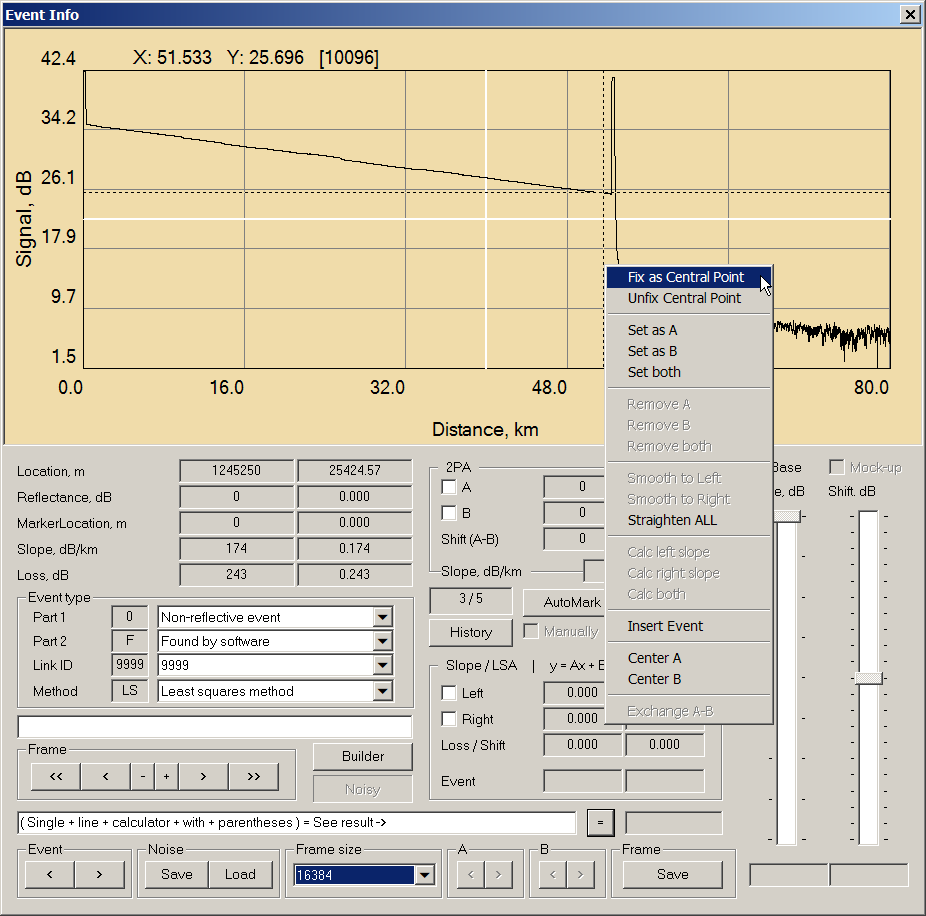
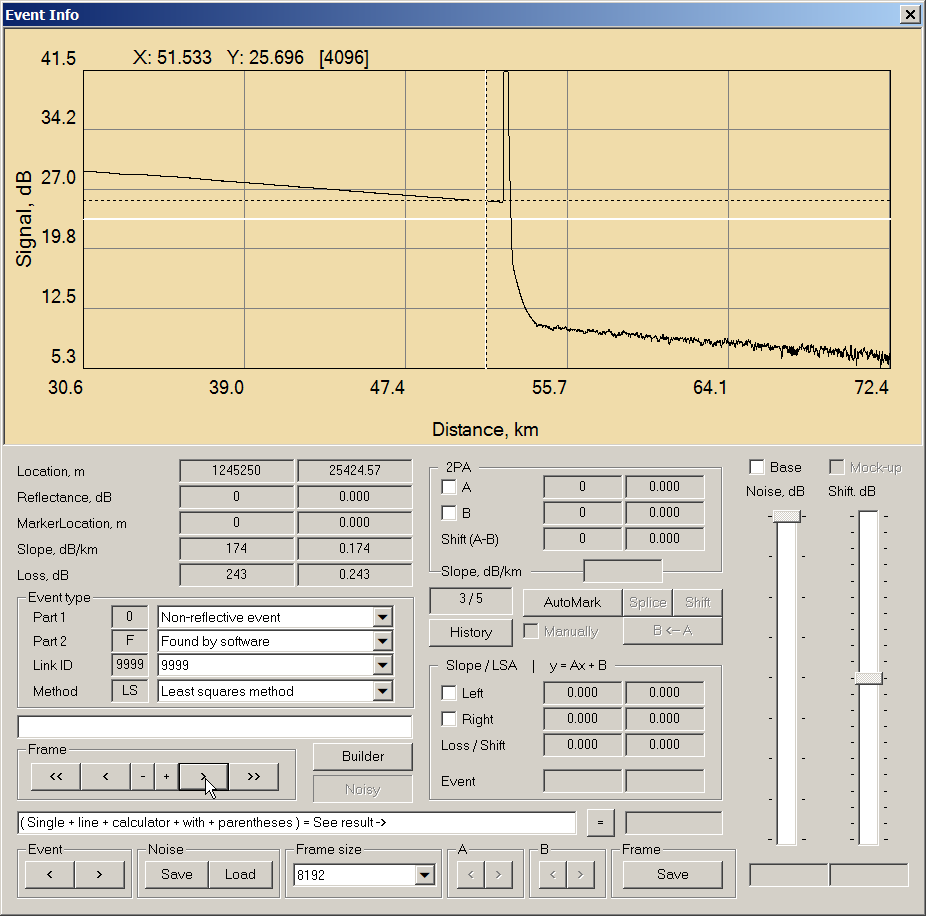

|
Фиксация пытается закрепить выбранную точку трассы в центре кадра для более удобного редактирования (при условии запаса по разрешению). Fix и Unfix - два верхних пункта меню, вызываемого по правому клику мыши в диалоге Event Info.
Порядок работы:
1. Выбрать размер кадра так, чтобы вошел нужный участок трассы.

2. Установить курсор в нужной точке трассы и зафиксировать RightNouseClick->Fix as Central Point.

3. Выбрать удобный размер кадра и редактировать как обычно.

|